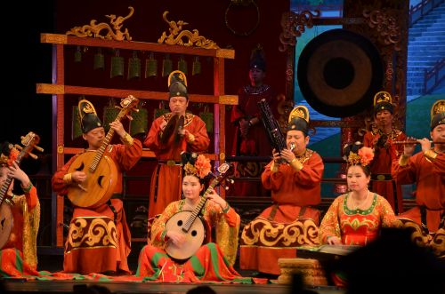
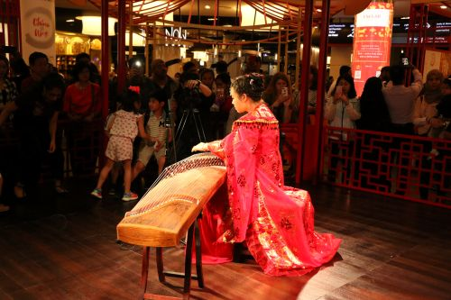

China


The music of China is very diverse and has developed over thousands of years. It includes many types of music, such as traditional, folk, classical, and modern popular music. Because China has many ethnic groups, each group has its own musical styles and traditions, which adds to the country's rich musical culture.
Chinese music dates back to ancient times, especially during early dynasties like the Zhou dynasty, when music was an important part of ceremonies, religion, and government. It was believed that music could bring harmony to society and connect people with nature. Over time, different regions created their own unique sounds and styles.
Traditional Chinese music often uses a five-note scale, called the pentatonic scale, which gives it a distinct sound. It is usually focused on melody rather than harmony. Common instruments include string instruments, flutes, and percussion, and music can be played solo or in small groups. Singing is also an important part of many traditional styles, including opera.
Chinese opera is a major form of traditional music and theater, combining singing, acting, and movement. Different regions have their own types of opera, each with unique sounds and performance styles.
In modern times, Chinese music has changed a lot due to outside influences, especially from Western countries. New genres like pop, rock, and hip-hop have become popular, especially among younger people. Even so, many artists still include traditional elements in their music.
Overall, the music of China is a blend of ancient traditions and modern influences, showing both the country's long history and its connection to the rest of the world.
Reference for Chinese music
Reference for Chinese music 2